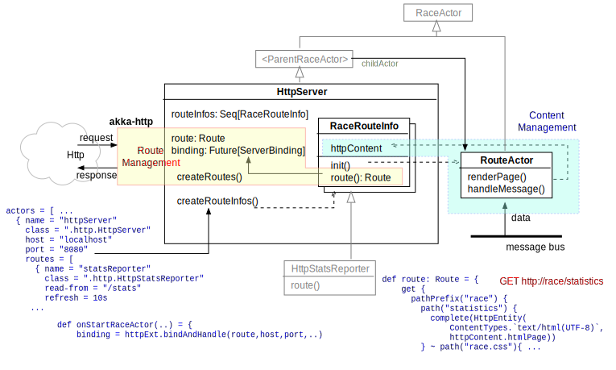

HttpServer
One of the use cases of RACE is to analyze large data streams and make results available online,
i.e. outside of RACE. To support this RACE includes the gov.nasa.race.http.HttpServer, which
is a low- to mid-level traffic web server that can be configured with RaceRouteInfo objects,
to turn data received from RACE channels into dynamic HTML content and map it to URIs, supporting
dynamic refresh, user authentication, logging and more.
Like every web server, HttpServer has two major functions:
- routing - mapping trees of URIs to content and http methods)
- content management - creating and retrieving web content
For routing HttpServer leans heavily on the AkkaHttp library, which provides a full
DSL to hierarchically define URI systems with interspersed processing elements such as
HTTP methods and path combinators. The DSL itself is beyond the scope of this document, here we
just note that each configured RaceRoutInfo can provide its own route() method that
returns a akka.http.scaladsl.server.Route object.

RaceRouteInfo is the construct that ties data acquisition, content creation and content/route
association together. Each HttpServer instance can be configured with any number of
RaceRouteInfo objects, which in turn can have their own configuration parameters. The design is
similar to RaceViewerActor and RaceLayerInfos (see WorldWind Viewer).
Not surprisingly, data acquisition is handled through dedicated actors that are associated with their
corresponding RaceRouteInfos. Such actors are usually inner classes of their respective
RaceRouteInfos (see e.g. gov.nasa.race.http.HttpStatsReporter) that extend
SubscribingRaceActor and turn data received from the subscribed channels into HttpContent
objects (aggregation of HTML page and associated resources such as images etc.). The HttpContent
is stored in RaceRouteInfo and referenced from within its route() method to generate
the response for valid HTTP requests.
Although HTML content creation can be done manually, most RaceRouteInfos use the ScalaTags
library, which provides a DSL that supports procedural elements in a tree that is
very close to the created HTML structure.
HttpServer includes a powerful, per-request cookie based user authentication mechanism to
support content that should not be publicly accessible.
The gov.nasa.race.http.Test{RouteInfo,Authorized,Refresh} examples show how define routes and
(self refreshing) HTML content.:
//--- basic RaceRouteInfo example
class TestRouteInfo (val parent: ParentContext, val config: Config) extends RaceRouteInfo {
val request = config.getStringOrElse("request", "test")
val response = config.getStringOrElse("response", "Hello from RACE")
override def route = {
path(request) {
get {
complete(HttpEntity(ContentTypes.`text/html(UTF-8)`, response))
}
}
}
}
//--- example of how to implement authorized content for configured paths
class TestAuthorized (val parent: ParentContext, val config: Config) extends AuthorizedRaceRoute {
val request = config.getStringOrElse("request", "secret")
var count = 0
def page = html(
body(
p(s"the supersecret answer #$count to the ultimate question of life, the universe and everything is:"),
p(b("42")),
p("(I always knew there was something wrong with the universe)"),
logoutLink
)
)
override def route = {
path(request) {
get {
count += 1
completeAuthorized(User.UserRole, HttpEntity(ContentTypes.`text/html(UTF-8)`, page.render))
}
}
}
}